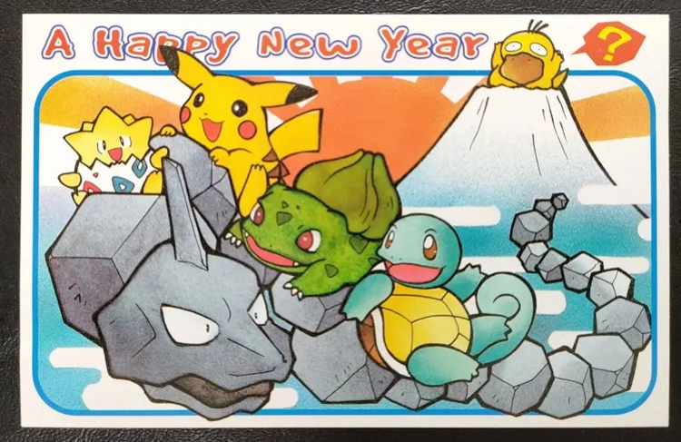
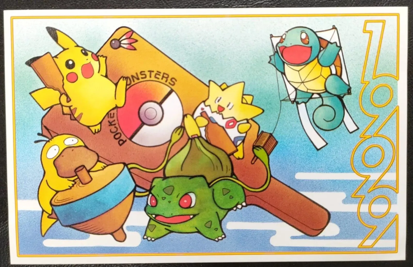
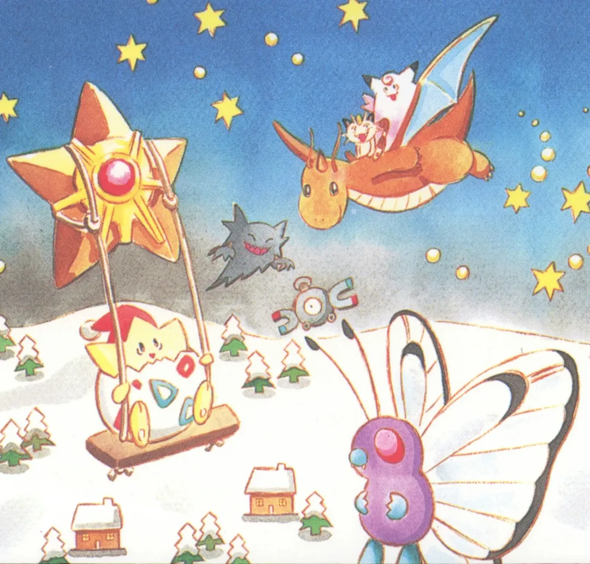
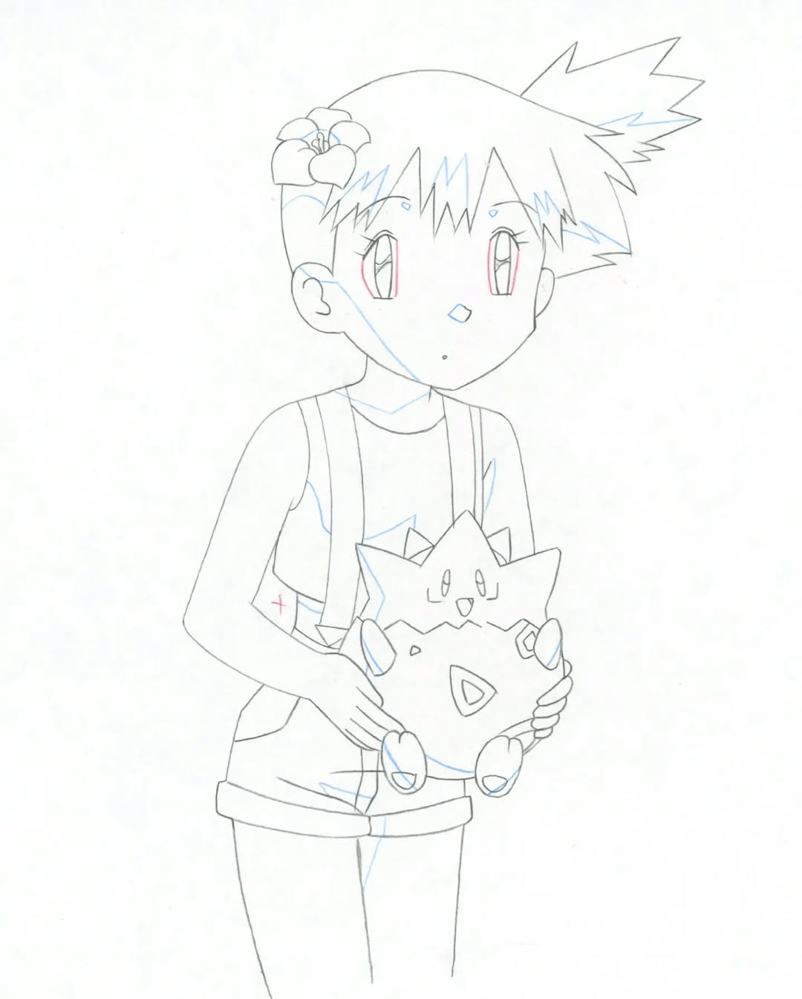
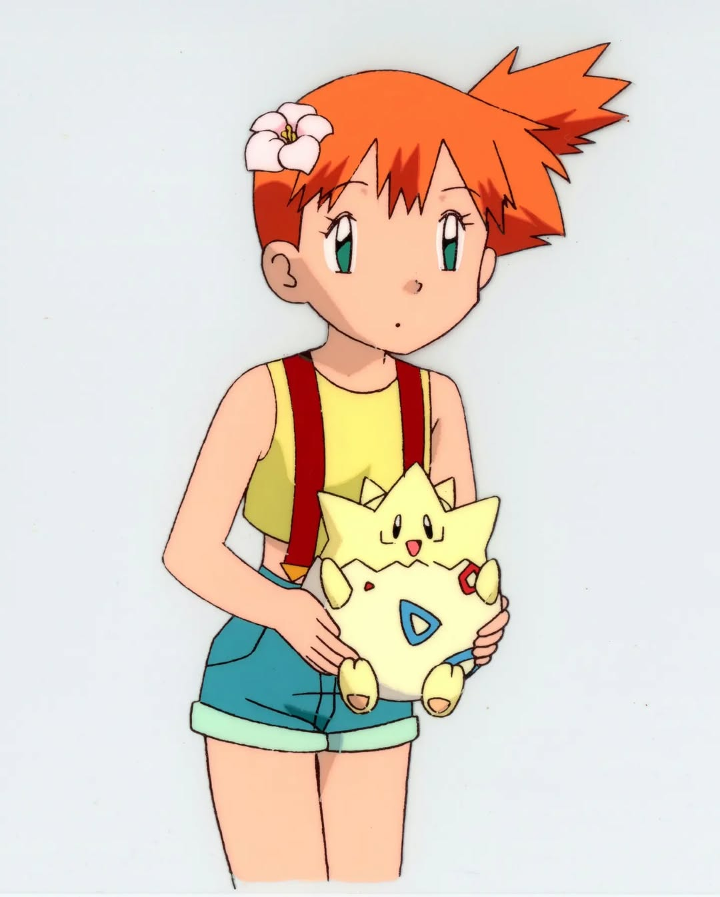

Togepi Fan Club
Vintage Art

🎨Illus. Kagemaru Himeno, 1999, Post Card

🎨Illus. Kagemaru Himeno, 1999, Post Card

🎨Illus. Kagemaru Himeno, 1999, Post Card

🎨Illus. Naoyo Kimura, 1998, Envelope | 📝Source @nostalgia_provider on Instagram (Only Scan Documented)


🎨Original Anime Celluloid | 📝Source @nostalgia.archive on Instagram


🎨Illus. Keiko Fukuyama, 1999, Postcard Set A


🎨Illus. Keiko Fukuyama, 1999, Postcard Set B


🎨Illus. Keiko Fukuyama, 2000, Postcard Set A